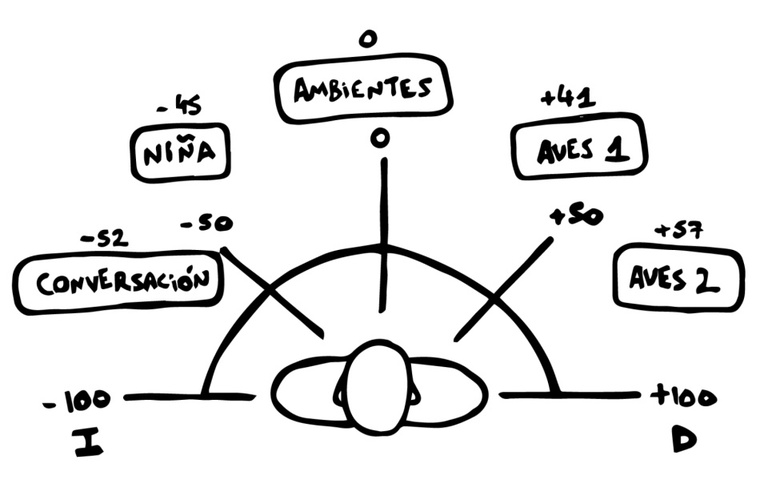
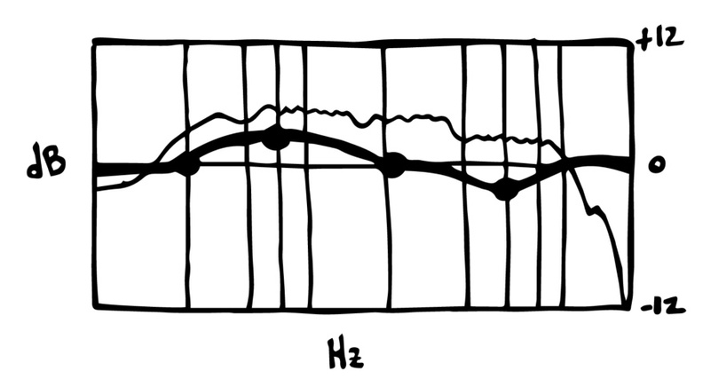
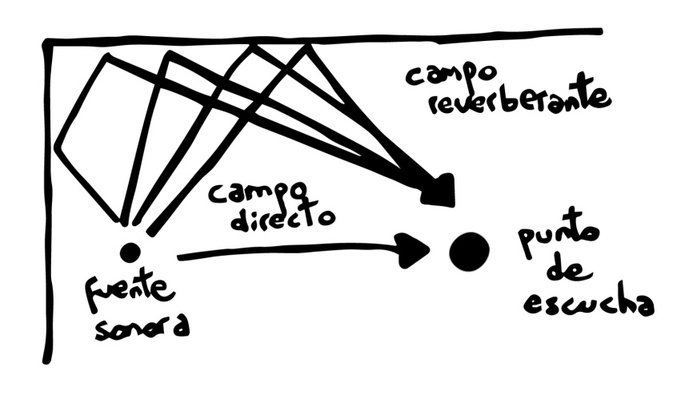

Cuando escuchamos una mezcla que suena "grande" o "profesional", en realidad estamos percibiendo un espacio sonoro bien construido: cada elemento tiene su sitio, y ese sitio se define en tres ejes.
Altura: describe qué instrumento está por encima o por debajo de otro. Los sonidos agudos se perciben en la parte superior de la imagen estéreo, y los graves en la inferior — algo que puedes trabajar con el ecualizador.
Amplitud: si un instrumento suena más a la izquierda o a la derecha. Con la panoramización puedes repartir tus pistas a ambos lados del centro para conseguir una imagen sonora amplia.
Profundidad: si un elemento está delante o detrás de otro, influenciado sobre todo por la reverberación y la ecualización. Cuanta más reverb añades a una pista, más lejos suena; sin reverb, suena como si la tuvieras justo delante.
El volumen es la variable más directa para dar lugar a un sonido dentro del espacio: los sonidos con más intensidad se perciben como fuentes más cercanas, y los más débiles como más alejadas. Si coges un clip de audio y varías su volumen, estás alterando directamente la percepción de su distancia respecto al punto de escucha.
Tip: cuidado al subir el volumen de no saturar el sonido — busca siempre una buena estructura de ganancia antes de tocar cualquier otro proceso.
El campo estéreo es un espacio tridimensional creado a partir de dos fuentes de sonido (izquierda y derecha), en el que puedes ubicar cada elemento de tu mezcla. La combinación de intensidad y posición estéreo es lo que te permite colocar todas las fuentes sonoras en el espacio que estás construyendo.

Ejemplo de cómo repartir distintos elementos a lo largo del campo estéreo, de -100 (izquierda) a +100 (derecha).
La EQ te ayuda a colocar los elementos dentro de una mezcla tridimensional: los sonidos con más agudos suelen sentirse más cerca que los que tienen menos. Es una herramienta clave para dar verosimilitud al espacio que estás construyendo — piensa en cómo cambia el sonido cuando alguien sube a un coche mientras habla, o sale de una fiesta con música de fondo.

Una curva de EQ no es más que decidir qué frecuencias suben, cuáles bajan, y cuáles se quedan igual.
En la realidad, siempre escuchamos una combinación de campo directo (el sonido que llega directo desde la fuente) y campo reverberante (sus reflejos en el espacio). La reverb te ayuda a reflejar esa realidad sonora, o a darle a un sonido un espacio distinto del que tenía en origen. Puedes generar espacios orgánicos y naturales para ser descriptivo con una acción, o espacios exagerados para darle más intención.

Campo directo vs. campo reverberante: la base de cómo funciona cualquier reverb.
Es literalmente lo que pasa cuando grabamos una voz o una guitarra acústica en la cabina del Estudio A: el micro capta señal directa de la fuente y, a la vez, los reflejos de las paredes de la sala.
La espacialidad y la mezcla son parte central de lo que trabajamos en la Escuela de Sonido de IRL Estudios.
Para más info escríbenos a nuestro mail: irlestudiosmadrid@gmail.com